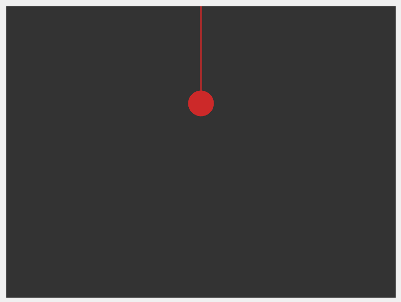
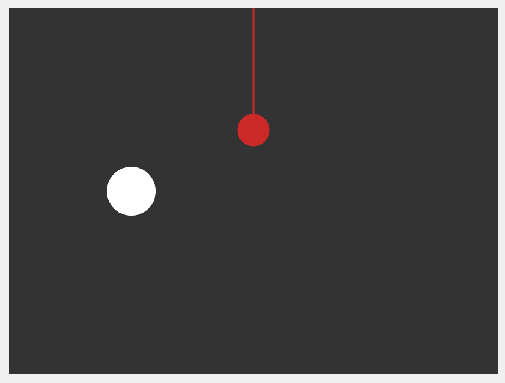

This project explores motion using trigonometric functions, time-based movement, randomness, and Perlin noise. The following six stages document the development of my animation.

I began by creating a stationary pendulum using a line and a circle. This established the basic structure of my animation.

I added a second circle to the canvas and positioned it separately from the pendulum. Both shapes remained stationary during this stage.
I introduced movement to both shapes. The pendulum swings using a cosine function, while the ball moves using velocity and bounces against the canvas edges.
I introduced motion trails by storing the ball's previous positions in an array. Each trailing circle gradually changes in size and opacity.
I used millis() to change the ball's velocity every two seconds. I also added Perlin noise to create more organic movement independent of the pendulum.
I added glowing effects, continuously changing colors, and colorful motion trails. These changes made the animation more visually engaging while preserving the independent movements.
The final interactive sketch is embedded below.